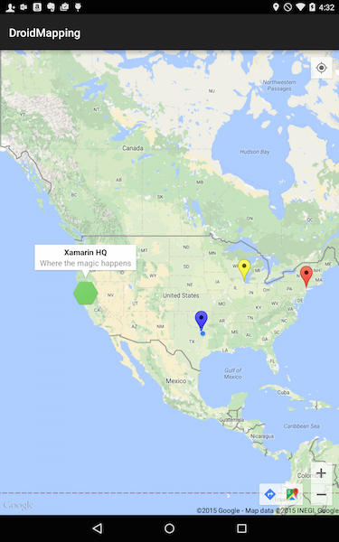

Duration
10-15 minutes
Lab goals
In this exercise, you will add annotations to the map in the form of markers. When you are finished, the application will look something like this:
Required Assets
There is a Exercise 4 folder included with this lab exercise which contains a completed project if you'd like to compare your work, or deviate from these lab instructions to experiment.
Exercise Challenge
To complete this exercise, you will need to do the following high-level steps. Use these to guide you through the code changes and ask questions of the instructor or refer to the slides just covered in class. If you are doing the exercise on your own, then you can refer to the step-by-step directions below to fill in any necessary details.
-
Add four markers to the map, using the coordinates listed in the code block below. The four markers will be:
-
A default
Markerover New York City in mid-town Manhattan. -
A second
Markerwith an image over the Xamarin HQ. This marker will also set aTitleandSnippetto support an info window. -
A third Yellow
Markerover Chicago. This marker should be draggable. -
A final Blue
Markerover Dallas. This marker will have aTitleandSnippetand change the info window anchor to be on the top-right corner.
-
A default
-
Add some event handlers to manage interaction with the markers, info windows and map itself. You will add three handlers:
-
Handle the
MarkerClickevent and look for the Dallas marker. If it is clicked, reverse theFlatproperty on the marker to have it rotate with the map. This is a boolean flag which you can just flip the value:marker.Flat = !marker.Flat;
The info window should continue to be displayed in all cases (remember you need to do something specific to enable this behavior!) -
Handle the
InfoWindowClickevent and look for the Chicago marker. If found, change the color of the marker toBitmapDescriptorFactory.HueRose. -
Finally, handle the
MapClickevent and reset the Chicago marker color back to yellow.
-
Handle the
- Here are the coordinates you will be using.
static readonly LatLng Location_Xamarin = new LatLng(37.77, -122.41); static readonly LatLng Location_NewYork = new LatLng(40.77, -73.98); static readonly LatLng Location_Chicago = new LatLng(41.88, -87.63); static readonly LatLng Location_Dallas = new LatLng(32.90, -97.03);
You can either continue on from the prior exercise, or use the completed solution from Exercise 2. Make sure to setup the API key in the GoogleMapsKey.cs file if you use the prior solution.
Steps
Adding Markers to the map
Let's start by adding some markers to the map and see how they visualize.
-
Start by adding all the coordinates as fields into the class from the above code snippet - these are just static fields and are the
LatLngpositions you need for each marker. -
Open the MainActivity.cs file and locate the
OnMapReadymethod—we'll add new code to this method prior to theawait getLocationPermissionsAsyncso the markers can be placed without waiting on the user's runtime permission response. -
Use the
AddMarkermethod to add a newMarkerOptionsto the map over New York. Use theSetPositionfluent method on theMarkerOptionsto set the coordinate toLocation_NewYork.
Run the application to see the Red marker over New York City. Notice that as you zoom in and out of the map, the marker stays the same size and is always pointed "up".
-
Stop the application and add a second marker using the
Location_Xamarinfield. This time, set the following values using the fluent API:SetTitlewith "Xamarin HQ"SetSnippetwith "Where the magic happens"
Our next marker will use a custom icon instead of the default pin. The custom icon image is found in the exercise assets of your copy of the cloned or downloaded course materials.
- Add the Assets > xamarin_icon.png image to the Resources > drawable folder.
-
On this new marker, set an custom icon using the
SetIconmethod to the newly addedResource.Drawable.xamarin_iconvalue. You will want to useBitmapDescriptorFactor.FromResourceto load this icon and create aBitmapDescriptor.
Run the application to see the results - you should be able to tap on the icon and get an info window which displays your title and snippet.
-
Next, add a yellow marker over Chicago (make sure to set the color to
HueYellow). Set a title of "Chicago" on the marker and make this one draggable through theDraggablemethod on theMarkerOption. Save the resultingMarkerinto a variable, as we will want access to it in a moment.
Run the application and try dragging this new marker around by tapping, holding, and moving it.
-
Finally, add a blue marker over Dallas. Set a title and snippet for the info window and adjust the info window position through the
InfoWindowAnchormethod on theMarkerOptionto be on the top/right side of the marker - this would be(0,1). Save this marker into a variable as well.
Run the application and tap on the Dallas marker to display the info window - notice how it is positioned differently than the Chicago one?
Adding custom behavior into the map
Next, let's add some event handlers to control what happens when we tap a marker, info window or the map. All of these handlers can be wired up in the OnMapReady implementation.
-
Add an event handler to the
MarkerClickevent. You can use an anonymous method, lambda, or traditional delegate method - whatever style you prefer. In the handler, look for the Dallas marker (remember how to compare markers?) If it's the Dallas marker, flip theFlatproperty (!Flat).
Run the application and find the Dallas marker. Rotate the map around using two fingers and notice that the marker stays oriented in the "Up" direction. Now, tap the marker. Now when you rotate the map, the marker should rotate with the map - Flat markers orient themselves to the surface of the map rather than the device. Tap it again to reverse the effect.
Notice what is now broken, however - we are no longer seeing the info window popups. Try a different marker with a title - Chicago for example. It will not display the popup either.
-
Since we want the default behavior to also be executed, set the
GoogleMap.MarkerClickEventArgs.Handledflag tofalsein theMarkerClickevent. You can either always do the assignment, or only when it's not Dallas - this will turn off the info window for Dallas but enable it for other markers. Challenge: how can you activate it for Dallas through the API? Check the code below for the answer.
Run the application and verify that the info windows are now displayed as expected.
-
Next, add an event handler for the
InfoWindowClickevent. This is called when you interact with the info window directly. In the handler, identify the Chicago marker and change the marker color toHueRose. -
Finally, add an event handler for the
MapClickevent and reverse the color change (change the Chicago marker back to yellow) if the Chicago marker's Info Window is not visible.
Run the application one last time and tap the Chicago marker to display the info window - then tap the info window to see the marker change color. Tapping on the map should then reverse the effect.
Summary
Congratulations! In this exercise, you added annotations to the map in the form of markers.